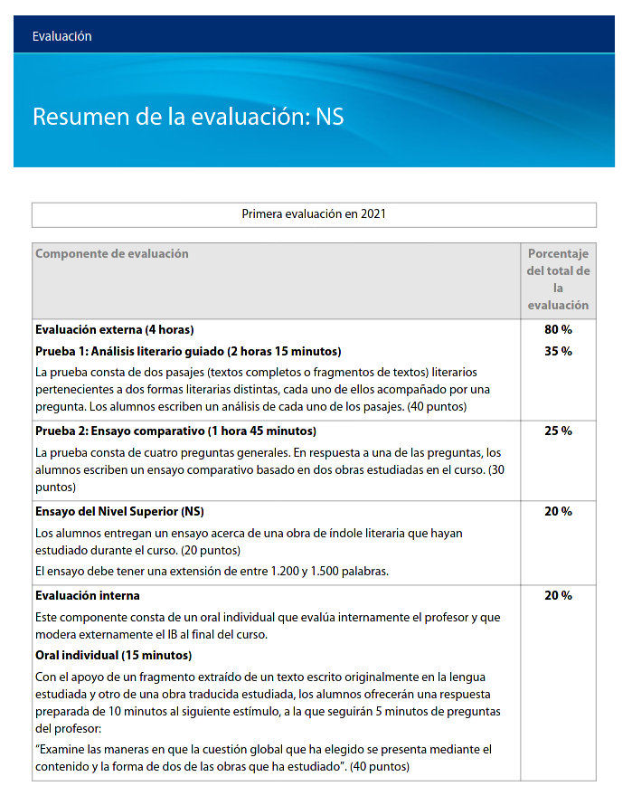

¿Qué son los elementos literarios?
Los elementos literarios son aquellos estilos diferentes que los escritores utilizan en su redacción para dar un mensaje personal en la trama a sus lectores. Por ejemplo, argumento, ambientación, método narrativo, narrador, protagonista, antagonista, temas, estados de ánimo, etc. Así pueden comunicar un mensaje que a través de su historia sin tener que decir directamente lo que quieren decir.
¿Cómo se evalúa la literatura en el IB
Si cursas Nivel Superior (NS) probablemente serás evaluado acordando a la siguiente tabla. Con un par de pruebas de evaluación externa y una interna. Si deseas saber exactamente las maneras en las que se evalúa cada prueba, te recomiendo que veas la guía completa que es proporcionada en la siguiente pregunta.
¿Hay una guía?
Por supuesto que la hay, cada materia perteneciente al Bachillerato Internacional contiene algún tipo de guía explicando cómo es el desarrollo de la materia a lo largo de lo que se cursa el Bachillerato y expresa los rubros de las distintas evaluaciones y lo que deben contener.
¿Qué tipo de literatura/obras son permitidas?
Para las evaluaciones es muy pero muy recomendable que utilicen las obras que se han estudiado en la clase, ya que se discutieron y analizaron a gran detalle por toda la clase. Hay que tener en cuenta que para la Prueba 2 no se pueden utilizar obras que ya se usaron para la Prueba 1.
¿Tienen que ser de la lengua madre?
BAJO REVISIÓN: Sí, ya que la materia se imparte en esa lengua y todas las obras estudiadas están de acuerdo a ese idioma.
¿Quién evalúa los trabajos?
Los trabajos que sean de evaluación externa son enviados a una institución anónima donde un evaluador juzga justamente el desempeño de los documentos otorgados.
¿Qué son los movimientos literarios?
Se sabe que existen los diferentes movimientos literarios, el Renacimiento Italiano, el Barroco, el Realismo, muchos de estos son más parte de las artes visuales, pero es el mismo concepto que se tiene con los movimientos literarios. Los movimientos clasicistas quisieron mantener los valores tradicionales de la escritura, apegándose a la redacción que lleva siendo el estándar por siglos. Las vanguardias son movimientos que han buscado hacer movimientos drásticos en la literatura, queriendo alterar componentes clave para refrescar el estilo a algo más apropiado a lo lidiado en la redacción.